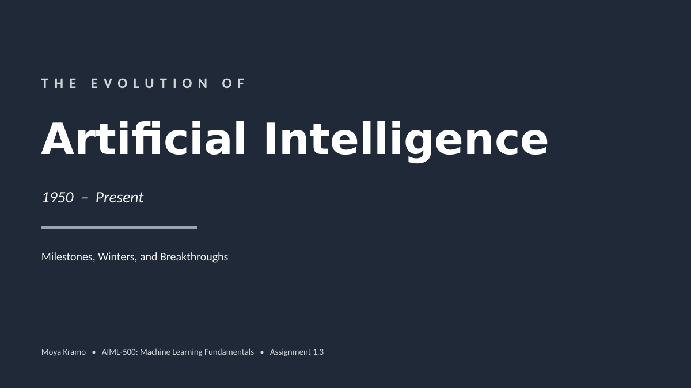

AI, made legible
for people who make decisions.
I'm Moya Kramo, an emerging AI and machine learning professional with a background in finance. I translate complex technical shifts into clear, actionable insight, so you can act on what AI actually changes about decision-making.
Built for you if…
Whoever you are, the goal is the same: a credible, clear read on where AI genuinely helps.
You're a finance professional
Quants, markets, and investing teams weighing where AI creates real edge versus noise.
You're a founder or entrepreneur
Builders shipping AI products and operations who need signal over spin.
You're a strategy leader
Leaders driving AI adoption who want sharper questions and better bets.
You're an AI enthusiast
Curious about where the field is really going, beyond the headlines.
The through-line
I engage with AI enthusiasts, finance professionals, founders, and strategy leaders to show how AI can benefit them and how they can leverage it, translating complex, technical ideas into clear, actionable insight, without hype or oversimplification.
Latest artifact
A resource library that offers context, suggestions, and starting points you can build on.

The Evolution of AI: A Visual Timeline
A five-minute grounding in AI's real history, from Turing through the two AI winters to today's generative and agentic era.
Explore →In progress
Additional artifacts on AI in finance, products, and strategy are on the way.